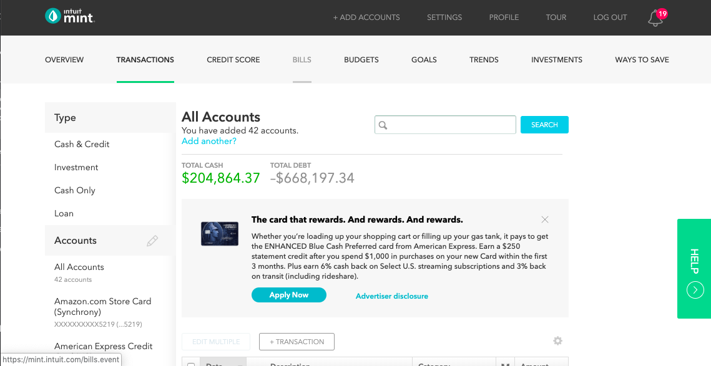
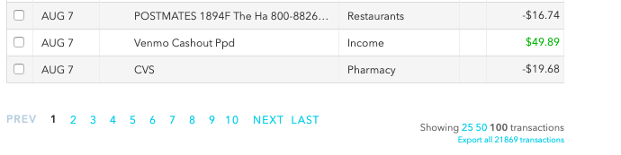
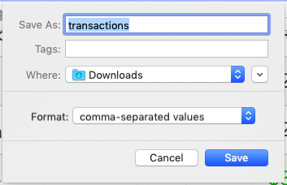
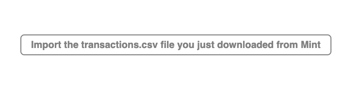
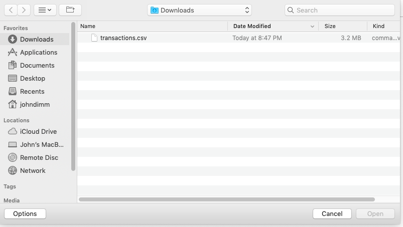

How to connect Mint to Breakdown using the Google Chrome Extension
1. Select All Accounts in the Transactions tab.

2. Scroll to the bottom of the page and click the Export link.

3. Pick a location for the transaction.csv file.

4. When the download is complete, the Google Chrome Extention will open a new tab.
Click the button.

5. Pick the transaction file you just downloaded.
The file will be imported into your local lovefield database.
Nothing is uploaded. Your data stays on your computer.
